Валентин Юрин,
руководитель службы документации Network Systems Group
info@nsg.ru
Российская компания NSG (http://www.nsg.ru), разработчик сетевого оборудования, создает высокотехнологичные устройства для сетей IP, Frame Relay и X.25. Модульные мультипротокольные маршрутизаторы NSG служат в сетях различного типа и назначения: у корпоративных заказчиков, операторов связи и поставщиков сетевых услуг, нуждающихся в недорогом и эффективном решении для подключения корпоративных пользователей, поставщиков услуг Интернета для индивидуальных пользователей. Возможности этих устройств позволяют применять их в выделенных сетях управления телекоммуникационным оборудованием, автоматизированных системах управления производством (АСУП) и других технологических решениях.
Ядро корпоративной сети
Основные продукты NSG, предназначенные для применения в ядре корпоративной сети, - это универсальные маршрутизаторы NSG-900/4WL и NSG-800/4WL (рис. 1, 2). Внешне схожие, эти две модели отличаются друг от друга в первую очередь возможностями ПО. По типам процессоров, производительности и функциональности они аналогичны популярным сериям маршрутизаторов Cisco 2650 и Cisco 2600 соответственно.
| 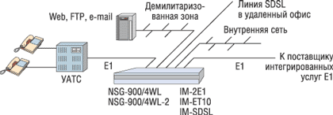 |
| Рис. 1. NSG-900/4WL как свернутая магистраль (collapsed backbone) корпоративной сети.
|
| 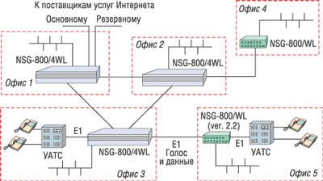 |
| Рис. 2. Маршрутизаторы NSG-800/4WL в ядре корпоративной сети.
|
Серия NSG-900 работает под управлением новой ОС NSG Linux, реализующей современные технологии построения сетей IP и Ethernet. В их число входят, например, виртуальные частные сети (VPN) на базе спецификации IPSec, совместимые с решениями других производителей; виртуальные локальные сети (VLAN) 802.1q; механизмы обеспечения качества услуг (QoS); Cisco-совместимые bridge groups; расширенный набор протоколов динамической маршрутизации: RIP, RIP2, OSPF, BGP, а также Cisco-подобный командный язык, привычный многим сетевым администраторам.
Модель NSG-800/4WL, в свою очередь, входит в старшую линейку продуктов NSG, работающих под управлением традиционного ПО NSG. Она обеспечивает более широкий набор мультипротокольных возможностей - как стандартных, так и фирменных разработок NSG, особенно в части X.25 и взаимодействия сетей различных типов (IP, Frame Relay, X.25). Стабильность этих решений подтверждается многолетней массовой эксплуатацией аппаратуры NSG.
Обе модели оснащены встроенным портом Fast Ethernet и четырьмя разъемами расширения, благодаря чему можно использовать все типы интерфейсных модулей NSG: последовательные, xDSL, интерфейсы цифровой иерархии и другие. В частности, эти две серии поддерживают дополнительные модули Ethernet, что позволяет применять их в качестве шлюза между несколькими локальными сетями. Поддержка модулей E1 обеспечивает эффективное использование структурированных каналов E1, предоставляемых оператором связи, для передачи внутрикорпоративного трафика, телефонии и выхода в Интернет.
Подключение удаленных офисов
На периферии корпоративной сети оптимальным решением можно считать маршрутизаторы класса CPE (customer premises equipment) NSG-900/2WL и NSG-800/WL. Эти устройства предназначены в первую очередь для подключения небольших офисов к Интернету или к магистрали корпоративной сети. От своих старших собратьев они отличаются меньшим числом разъемов расширения (один или два), но сохраняют все их вычислительные возможности и функциональность ПО. Как и другие устройства этих серий, они оснащены встроенным портом Fast Ethernet.
Для высокоскоростного соединения с Интернет-провайдером или корпоративной сетью могут применяться встроенные модемные модули SHDSL, SDSL, IDSL или традиционные внешние модемы с последовательными интерфейсами (V.35 и т. д.). Поддержка сменных модулей Ethernet позволяет применять современные технологии широкополосного местного доступа, например, модемы xDSL, мосты радио-Ethernet, кабельные модемы и другое оборудование с Ethernet-интерфейсом. В качестве транспортной среды могут также задействоваться каналы Е1.
Наличие второго разъема расширения делает NSG-900/2WL и двухпортовую модификацию NSG-800/WL законченными решениями для комплексного подключения Web-ресурсов небольшого предприятия. К одному из портов (как правило, встроенному Fast Ethernet) подключается локальная сеть офиса, закрытая для доступа извне; к другому - канал от поставщика Интернета; к третьему - так называемая демилитаризованная зона, т. е. изолированная физическая сеть, в которой размещаются общедоступные Web-ресурсы: серверы HTTP, FTP, электронной почты и т. п.
В ассортименте интерфейсных модулей NSG имеется модуль GSM/GPRS, с помощью которого можно оперативно подключать небольшие офисы к Интернету через сотовую сеть в тех случаях, когда использовать проводные каналы связи невозможно или нецелесообразно. С другой стороны, наличие модуля Bluetooth позволяет организовать на базе устройств NSG беспроводную точку доступа в пределах офиса. Готовятся к выпуску также модули CDMA 450 и Wi-Fi.
Объединение локальных сетей по схеме "точка-точка"
Простейшая задача объединения двух локальных сетей имеет свои особенности. Прежде всего, во многих случаях требуется высокоскоростное соединение, которое не станет узким местом всей сети. Именно здесь корпоративный пользователь часто попадает в разрыв, обусловленный сегодняшним состоянием телекоммуникационных технологий. Например, если в качестве транспорта используются физические медные линии, то быстродействие технологий SDSL и SHDSL ограничено величиной 2,3 Мбит/с, а дальность действия большинства технологий VDSL составляет 1-1,5 км (что в российской реальности величина совершенно ничтожная). Заказчику же требуется превзойти оба эти параметра хотя бы в два раза, т. е. получить скорость 4-4,6 Мбит/с при дальности 3-4 км (наиболее подходящее здесь решение SHDSL2 - 5,7/11,4 Мбит/с - пока еще нельзя считать вполне зрелым). Аналогичная ситуация возникает при использовании цифровых каналов связи, когда одного канала E1 уже недостаточно, а канал Е3 - еще чрезмерно мощное и дорогое решение.
Оба эти пробела успешно устраняются с помощью технологии MultiLink Frame Relay, реализованной в устройствах NSG. Суть ее в том, что несколько физических каналов связи (одинаковых или даже разнородных) объединяются в один логический канал с автоматическим резервированием и балансировкой нагрузки. Например, несколько относительно медленных линий IDSL позволяют достичь вполне приемлемых скоростей даже при дальностях 8-10 км, а две линии SDSL или SHDSL на средних дальностях суммарно достигают быстродействия до 4,6 Мбит/с. Интерфейсные модули xDSL или G.703/E1 устанавливаются непосредственно в маршрутизатор, так что все решение укладывается в одно устройство. При этом в ряде случаев пара маршрутизаторов NSG оказывается значительно дешевле, чем пара просто четырехпроводных модемов (или инверсных мультиплексоров Е1) других производителей.
Другой механизм, актуальный для объединения локальных сетей, - работа в режиме моста (bridging), когда взаимодействие сетей происходит не на третьем, а на втором уровне протокольной иерархии, что упрощает структуру сети. Мост из двух устройств NSG может работать как в обычном режиме Ethernet, так и в режиме VLAN (IEEE 802.1q). Настройка моста выполняется в терминах Bridge Groups, в которые может входить произвольное число портов Ethernet и/или Frame Relay. Реализация моста Ethernet-over-Frame Relay полностью совместима с аналогичным решением компании Cisco Systems.
Сети поставщиков услуг
Все сказанное выше относительно корпоративных решений на основе продуктов NSG относится и к операторам, предоставляющим услуги высокоскоростного доступа в Интернет, объединения локальных сетей и другие услуги для корпоративных пользователей. В операторских решениях аппаратура NSG, как правило, занимает место на периферии сети поставщика услуг, однако в определенных случаях - например, у небольших субпровайдеров или в территориально распределенных сетях - может формировать и ее ядро.
Уже упоминавшиеся устройства NSG-900/4WL и NSG-800/4WL могут использоваться в качестве серверов доступа по физическим линиям xDSL, последовательным интерфейсам или интерфейсам G.703.6, G.703.1. Применение недорогих устройств NSG целесообразно в распределенных сетях, охватывающих обширные территории с невысокой плотностью трафика (порядка нескольких мегабит в секунду на каждый узел). Именно такая структура сетей характерна для многих российских регионов и стран СНГ. Устройства NSG, спроектированные для круглосуточной работы в необслуживаемом режиме, хорошо подходят для удаленных узлов сети, расположенных за десятки и сотни километров от районного или областного центра. При этом полнофункциональное управление ими может быть централизованным, с помощью любых известных для этой цели инструментов: Telnet, SNMP, Web, удаленный PAD в сети X.25 или удаленная консоль в сети Frame Relay. Загрузку нового ПО также можно проводить дистанционно с помощью протокола TFTP (для NSG-900 поддерживается еще FTP).
Для сетей Frame Relay и X.25, требующих большого числа физических портов WAN, наиболее употребительными остаются модели NX-300/7WL и NX-300/8W. Помимо наличия семи-восьми последовательных портов на одном шасси, фирменные технологии NSG X.25-over-Ethernet и Frame Relay-over-Ethernet позволяют каскадировать несколько устройств, используя в качестве шины недорогую сеть Ethernet. Таким образом удается создавать многопортовые узлы коммутации пакетов с практически неограниченным числом портов. Например, из пяти устройств NX-300/7WL можно построить 35-портовый узел с полносвязной внутренней топологией (т. е. устройства будут логически соединены друг с другом по схеме "каждый-с-каждым").
Другое применение технологий X.25-over-Ethernet и Frame Relay-over-Ethernet, ставшее актуальным в последнее время, - это объединение двух или более сегментов корпоративной сети Frame Relay или X.25 через городскую сеть Ethernet (рис. 3). В качестве транспорта может использоваться беспроводная, городская оптоволоконная сеть или любая другая высокоскоростная система местного доступа (xDSL- и кабельные модемы и т. п.). В частном случае передачи IP-трафика данное решение удобно тем, что не требует маршрутизации IP-пакетов и их реинкапсуляции из Frame Relay в Ethernet и обратно; таким образом, устраняются два лишних шага маршрутизации (hops), экономятся вычислительные ресурсы устройств и увеличивается производительность. Кроме того, в общем случае по корпоративной сети Frame Relay могут передаваться и различные другие виды трафика, в том числе такие, для которых не предусмотрена передача через сеть Ethernet (например, данные унаследованных приложений или произвольные неструктурированные асинхронные потоки).
| 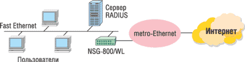 |
| Рис. 3. Объединение сегментов сети Frame Relay или X.25 через городскую сеть Ethernet (радио, оптоволоконную и т. п.).
|
Наконец, операторы связи часто используют аппаратуру NSG как выделенные контроллеры или терминальные серверы для управления основной аппаратурой (мультиплексорами SDH и т. п.). Возможны и более простые решения, когда наряду с передачей пользовательского трафика устройство NSG предоставляет доступ к другому оборудованию, расположенному на данной площадке, через консольный порт и/или модуль двоичного ввода-вывода. (О технологических решениях NSG, в частности для телекоммуникационной индустрии, речь пойдет отдельно.)
Доступ в Интернет для индивидуальных пользователей: PPPoE
Системы индивидуального доступа на основе технологии PPP-over-Ethernet (PPPoE) позволяют организовать сеансовое подключение пользователей в локальных сетях жилых домов, гостиниц, офисных центров для мелких арендаторов и т. п. (рис. 4). Аутентификация пользователей обеспечивает каждому из них индивидуальный учет и оплату потребляемых услуг.
| 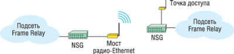 |
| Рис. 4. Система доступа на основе PPPoE с широкополосным подключением к вышестоящему оператору.
|
Оптимальную для такого применения аппаратную конфигурацию имеют упоминавшиеся выше маршрутизаторы NSG-800/WL и NSG-900/2WL, оснащенные портом Fast Ethernet и одним-двумя разъемами расширения. Как и остальные продукты NSG, при помощи сменных интерфейсных модулей они могут подключаться к вышестоящему оператору по транспортным средам различных типов, включая аппаратуру DCE со стандартными последовательными интерфейсами, физические линии, каналы E1 (структурированные и неструктурированные), а также широкополосные системы местного доступа, построенные на основе технологии Ethernet или оснащенные Ethernet-интерфейсами. В частности, это могут быть радиомосты для подключения к городским сетям Ethernet, внешние модемы xDSL, кабельные модемы, волоконно-оптические системы, оптические мосты прямой видимости и т.п.
Функции ААА (аутентификация, авторизация пользователей и учет потребляемых услуг) осуществляются по протоколам PAP и/или CHAP, на основе локального списка или удаленных серверов RADIUS, TACACS+. При работе с централизованными серверами AAA устройство NSG посылает им также статистику работы пользователей.
В числе интеллектуальных возможностей серверов доступа NSG следует отметить динамические IP-фильтры, включаемые индивидуально для каждого пользовательского сеанса по команде сервера RADIUS либо TACACS+. С помощью этого механизма можно реализовать, например, гостевой вход, позволяющий новому пользователю зарегистрироваться и активировать платежную карту. Реализация гостевого входа в устройствах NSG в высокой степени совместима с реализациями других производителей. Это позволяет устанавливать серверы NSG в действующие системы доступа, никак не изменяя при этом настройки серверов авторизации и уже имеющихся серверов доступа.
Модемный доступ в Интернет и корпоративные сети
Классический доступ в Интернет по коммутируемым телефонным линиям - технология устоявшаяся и хорошо известная, здесь трудно предложить что-либо существенно новое. Основной продукт NSG для таких применений - сервер асинхронного доступа NSG-800/16A, выпускаемый в 16- и 8-портовой конфигурациях. Помимо асинхронных портов RS-232, эта модель имеет встроенный порт Fast Ethernet и два разъема расширения; сменные интерфейсные модули позволяют подключать ее к глобальным сетям с различной средой передачи.
Одна из национальных особенностей коммуникаций в России и странах СНГ состоит в том, что модемный доступ по протоколам V.34 (и даже ниже) будет, по всей вероятности, еще долго оставаться востребованным. Большие расстояния, дефицитные и низкокачественные линии связи, архаичное оборудование АТС, низкая плотность пользователей и их еще более низкая платежеспособность, инертность местных телефонных сетей в сочетании с их фактической монополией - неотъемлемые черты евразийской телекоммуникационной среды.
Именно этим особенностям вполне отвечает NSG-800/16A. На основе этого устройства - как и другие продукты NSG, достаточно недорогого по сравнению с именитыми зарубежными аналогами - можно эффективно строить небольшие удаленные узлы доступа в районных городах и в сельской местности (рис. 5).
Устройство NSG подключается как непосредственно к локальной сети поставщика услуг, так и к глобальным сетям с использованием различных технологий и протоколов. Широкий выбор WAN-интерфейсов и гибкость ПО предоставляют свободу в выборе магистрального подключения: по физическим линиям xDSL, каналам E1 или с помощью разнообразной аппаратуры физического уровня со стандартными последовательными интерфейсами (V.35 и т. д.) - в зависимости от того, какой из способов доступен в данной местности.
Благодаря сочетанию надежности и устойчивости работы со средствами удаленного управления (Telnet, SNMP, Web, удаленная консоль в сети Frame Relay) устройства NSG можно эффективно использовать на удаленных необслуживаемых площадках. Таким образом, модемные серверы NSG хорошо подходят для построения распределенных систем доступа в Интернет, охватывающих обширные территории с низкой плотностью абонентов.
| 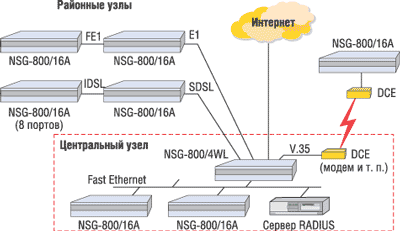 |
| Рис. 5. Территориально распределенная система модемного доступа на основе NSG-800/16A.
|
Как частный случай, следует упомянуть построение модемных пулов для удаленного доступа в корпоративные сети и особенно - систем доступа для современных IP-банкоматов с модемным интерфейсом PPP. В целом банковские приложения - отдельная область, которая традиционно является одной из наиболее сильных сторон оборудования NSG (и по этой причине заслуживает отдельной статьи).
Что касается пользовательской стороны узла доступа, то устройство NSG-800/16A оснащено стандартными портами RS-232 (число которых можно довести до 18 за счет разъемов расширения) и работает в сочетании с любыми типами модемов и модемных стоек. Свободные порты WAN и Ethernet можно использовать для подключения удаленных узлов "цепочкой", построения резервных периферийных каналов связи между узлами или постоянного подключения привилегированных пользователей (местных организаций и учреждений, пунктов коллективного доступа, Интернет-кафе и т. п.)
Для распределенных систем доступа, описанных выше, особенно актуальна поддержка централизованной службы AAA на основе RADIUS или TACACS+. При этом первое "А", аутентификация, в случае модемного доступа осуществляется как по протоколам PAP и/или CHAP, так и в терминальном режиме. При необходимости можно использовать и оба метода одновременно. Второе "А", авторизация, в данном случае означает еще и динамический выбор предоставляемой услуги в зависимости от имени пользователя. Это актуально для тех поставщиков услуг, у которых сохранились архаичные сервисы, например, UUCP-почта. Сервер доступа NSG способен различать пользователей, предоставляя одним доступ в Интернет, а другим - прозрачное подключение к серверу UUCP. Для пользователей PPP поддерживаются также динамические фильтры и гостевой вход.
Передача пакетных данных по сетям TDM
За счет модульной архитектуры маршрутизаторов NSG можно использовать различные типы среды передачи, в том числе передавать данные через системы плезиохронной цифровой иерархии (PDH), основанные на мультиплексировании по времени (TDM). К числу таких систем относятся каналы E1, или ИКМ-30, которые могут, применительно к тематике данной статьи, использоваться поставщиком сетевых услуг или предоставляться в аренду корпоративным пользователям.
Следует сразу оговориться, что большинство продуктов NSG не относится к числу каналообразующего оборудования для сетей Е1; единственное исключение - NSG-800/maxU, универсальный мультиплексор и коммутатор каналов Nx64 Кбит/с, о котором пойдет речь ниже. Все другие устройства NSG - это маршрутизаторы и коммутаторы пакетов, для которых каналы Е1 могут служить одним из возможных вариантов транспорта на физическом уровне. Передача данных по сетям Е1 осуществляется различными способами в зависимости от того, какая именно услуга предоставляется оператором связи.
Самые простые способы доступа к сетям Е1 - интерфейс G.703.1 со скоростью 64 Кбит/с и неструктурированный поток G.703.6 со скоростью 2048 Кбит/с (в редакции ITU-T G.703 от 2001 г. - Е0 и Е12 соответственно). С точки зрения архитектуры устройств NSG это обычные одноканальные интерфейсы, работающие с фиксированной скоростью и реализованные в виде соответствующих интерфейсных модулей. Неструктурированный режим 2048 Кбит/с поддерживают также все интерфейсы устройств NSG, предназначенные для работы со структурированным потоком Е1. Этим устройства NSG выгодно отличаются от продукции некоторых других производителей, чьи модули E1 не поддерживают неструктурированного режима, а модули G.703.6 существенно дороже.
Одноканальные интерфейсные модули IM-Е1 - это оконечные устройства сети Е1, и они позволяют выбрать из структурированного потока Е1 одну группу канальных интервалов (таймслотов). Количество и номера таймслотов могут быть произвольными; остальные таймслоты игнорируются. В предельном случае эта группа включает 31 таймслот с суммарным быстродействием 1984 Кбит/с.
Сдвоенные модули Е1 реализуют функцию drop-and-insert - вставку данных в определенные таймслоты потока Е1, в то время как остальные таймслоты прозрачно переключаются с одного интерфейса на другой. Например, часть таймслотов в потоке, приходящем от оператора связи, может использоваться для передачи данных и обрабатываться маршрутизатором, а остальные передаваться далее на офисную АТС (рис. 6).
| 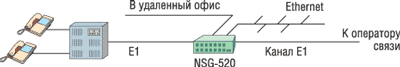 |
| Рис. 6. Интегрированная услуга передачи голоса и данных по каналу E1.
|
Первоначально такой режим разделения канала Е1 предназначался для подключения небольших офисов и филиалов корпоративных сетей, однако в отечественных условиях он неожиданно оказался востребованным и самими поставщиками сетевых услуг. В регионах с не самой развитой телекоммуникационной инфраструктурой нередко возникает ситуация, когда местная телефонная сеть готова выделить несколько таймслотов в существующем канале Е1, однако ее оборудование, выпущенное в лучшем случае в середине прошлого века, имеет только аналоговые телефонные интерфейсы и не предназначено для передачи данных. Решение было найдено в виде устройств NSG со сдвоенными интерфейсами E1 drop-and-insert, через которые пропускается весь поток на обеих сторонах канала (рис. 7). Уместно напомнить, что устройства NSG-900/4WL и NSG-800/4WL выпускаются в стоечных корпусах высотой 1U и могут оснащаться источником питания постоянного тока (от 36 до 72 В), что позволяет без проблем разместить их в стандартной 19- или 21-дюйм аппаратной стойке на районном узле связи.
| 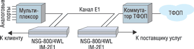 |
| Рис. 7. Вставка данных в существующий канал E1.
|
Сдвоенный интерфейс E1 реализован в продуктах NSG в виде интерфейсного модуля IM-2E1 для серий NSG-900, NSG-800, NX-300, а также в составе специализированного устройства младшего класса NSG-520. Оба интерфейса Е1 в этих устройствах могут работать и в режиме drop-and-insert, и как два независимых канала. В случае режима drop-and-insert для бесперебойной работы телефонной сети дополнительно устанавливается релейный модуль; при отказе питания устройства NSG он прозрачным образом переключает канал Е1 через оба интерфейса на аппаратном уровне.
Наиболее сложный вариант подключения к каналу Е1 - режим Channelized E1, реализуемый интерфейсным модулем IM-CE1. В этом случае из потока выделяются несколько (до 31) независимых групп таймслотов, каждая из которых может использоваться для передачи данных. Например, в корпоративной сети, показанной на рис. 8, каждый из трех маршрутизаторов формирует поток Е1, состоящий из трех групп. Две группы коммутируются в сети Е1 на другие площадки, третья группа обеспечивает доступ в Интернет.
| 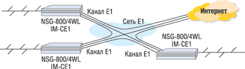 |
| Рис. 8. Объединение филиалов корпоративной сети через сеть Е1.
|
На рис. 9 показано последовательное подключение многих площадок (до 31) по каналу Е1. Пример демонстрирует все три режима доступа к каналу. На центральном узле модуль IM-CE1 организует структурированный канал Е1, в котором выделены таймслоты для каждой из удаленных площадок. Устройства, расположенные в середине цепочки, работают в режиме drop-and-insert и выбирают из потока предназначенные для них таймслоты. Последнее устройство в цепочке выполняет роль оконечного и также использует выделенную группу таймслотов.
| 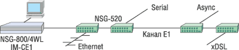 |
| Рис. 9. Подключение нескольких площадок к каналу E1 "цепочкой".
|
Кроме того, последние модификации устройств NSG поддерживают одновременно два интерфейса CE1, что позволяет создавать системы с кольцевой топологией.
NSG-800/maxU - интегрированная платформа доступа
Особое место в линейке продуктов NSG занимает NSG-800/maxU - универсальный мультиплексор - коммутатор -маршрутизатор каналов Nx64 Кбит/с. Это комплексное устройство, объединяющее две основные функции для передачи голоса и данных по каналам E1. С одной стороны, это мультиплексор и коммутатор каналов E1, позволяющий обрабатывать голосовой трафик и данные. С другой стороны, NSG-800/maxU можно рассматривать как маршрутизатор, оснащенный развитым интерфейсом физического уровня.
Источниками голосового трафика могут быть аналоговые телефонные порты и заданные таймслоты потоков E1. Данные могут коммутироваться на аппаратном уровне между физическими портами, заданными таймслотами и группами таймслотов E1, а также портами маршрутизатора.
Основная задача, для решения которой предназначено устройство NSG-800/maxU, - это распределение одного или двух потоков E1 на большое число относительно низкоскоростных портов данных и голосовых портов, с программной маршрутизацией некоторой части данных. В более общем плане можно сказать, что это устройство позволяет коммутировать на физическом уровне произвольный набор потоков Nx64 Кбит/с от различных интерфейсов, мультиплексировать их в потоки E1, а также маршрутизировать данные средствами второго (канального) и третьего (сетевого) уровней протокольной архитектуры.
Устройство оснащено двумя встроенными портами Channelized E1/G.703.6. Набор интерфейсных карт включает голосовые интерфейсы FXS, FXO, E&M и порты данных V.24, V.35, IDSL, G.703.1, Channelized E1/G.703.6. Всего на одно шасси устанавливается до шести портов E1/G.703.6 с полным быстродействием, до 18 портов Fractional E1 или до 32 портов остальных типов. Кроме того, непосредственно на процессорном модуле установлены порты Fast Ethernet и V.35.
Благодаря таким гибким возможностям спектр потенциальных приложений NSG-800/maxU весьма широк и простирается от чисто голосовых решений до систем, предназначенных исключительно для передачи данных, со всеми промежуточными "остановками". Ниже приведено несколько частных примеров.
Удаленный вынос АТС. В данном случае устройство NSG-800/maxU используется исключительно для передачи голоса. Полученный поток E1 распределяется на 30 портов FXS. NSG-800/maxU может подключаться как непосредственно к современным цифровым АТС с интерфейсом E1, так и к любым аналоговым АТС через второе шасси NSG-800/maxU, укомплектованное портами FXO.
Сервер синхронного доступа для передачи данных. Устройство подключается к сети поставщика услуг встроенным портом Fast Ethernet или V.35 маршрутизатора, а к портам коммутатора могут быть подключены до 34 пользователей. Весь трафик (IP, Frame Relay или X.25) маршрутизируется программным образом и затем раздается на пользовательские порты.
Мультиплексор и маршрутизатор для голоса и данных. Промежуточный вариант, сочетающий различные возможности обработки трафика в устройстве NSG-800/maxU. Устройство подключено к сети оператора связи одним-двумя портами E1, через которые передаются в общем случае как голос, так и данные. Голосовые таймслоты и часть таймслотов, содержащих данные, аппаратно коммутируются на физические порты. Часть данных направляется в маршрутизатор и после маршрутизации либо возвращается в коммутирующую матрицу, либо покидает устройство через физические порты WAN и Fast Ethernet на процессорном модуле. Наконец, некоторые таймслоты могут прозрачно перебрасываться из одного потока E1 в другой (или даже в тот же самый).
Пример комплексного решения для оператора связи показан на рис. 10. К точке присутствия оператора подключено несколько площадок различных пользователей по каналам Fractional E1. Устройство NSG-800/maxU разбирает и сортирует трафик каждого пользователя. Таймслоты, выделенные для корпоративной сети передачи данных и для корпоративной телефонной сети, подключаются через сеть оператора на удаленные площадки этого же пользователя. Интернет-трафик всех пользователей проходит через маршрутизатор и передается в сеть поставщика услуг через физический порт WAN или Fast Ethernet. Голосовые таймслоты, предназначенные для выхода в ТФОП, собираются в один канал E1 и направляются на городскую АТС.
| 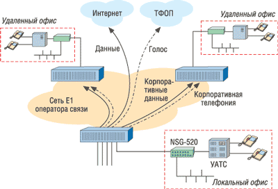 |
| Рис. 10. Комплексное решение на базе NSG-800/maxU для оператора связи.
|
Технологические решения
Отдельную область применения устройств NSG составляет построение систем технологического управления (рис. 11) - как для телекоммуникационных узлов, так и для других отраслей индустрии. Например, упоминавшийся выше многопортовый асинхронный сервер NSG-800/16A можно использовать на крупном телекоммуникационном узле в качестве выделенного терминального сервера. К нему подключаются консольные порты всего основного оборудования, и в случае неполадок удаленный администратор может получить к ним непосредственный доступ по Reverse Telnet.
| 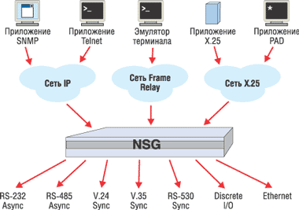 |
| Рис. 11. Устройства NSG в системе технологического управления.
|
Для управления менее масштабными системами применяются любые другие устройства NSG с меньшим числом портов. Программные возможности этих устройств в плане рассматриваемой здесь задачи одинаковы. В частности, специально для технологических применений выпускается встраиваемая модель NSG-509, устанавливаемая в любое оборудование на базе ПК с шиной ISA или PCI. Помимо традиционного интерфейса RS-232, в устройствах NSG используются и другие типы последовательных интерфейсов, такие, как V.35 или RS-485, интерфейсы дискретного ввода-вывода, а также заказные интерфейсы, специфические для отдельных отраслей и типов аппаратуры.
Набор программных возможностей для удаленного доступа к управляемым устройствам весьма богат. Возможно подключение по сетям различного типа, в зависимости от требований конкретного приложения. В IP-сетях для этой цели используется доступ по Telnet (так называемый Reverse Telnet). В сетях X.25 - низкоскоростных, но чрезвычайно надежных, а потому до сих пор популярных для банковских решений - устройства NSG работают как PAD, к которым можно подключать не только банкоматы, но и любые другие асинхронные устройства. В сетях Frame Relay устройства NSG позволяют мультиплексировать потоки данных от каждого порта и передавать их по одному высокоскоростному каналу связи вместо множества отдельных модемных линий. Наконец, мультипротокольные возможности этих продуктов позволяют применять различные типы инкапсуляции и обеспечивают взаимодействие сетей различного типа.
Наряду с собственно передачей данных, во всех вышеперечисленных случаях возможна (в той или иной форме) трансляция сигналов DTR/DCD между управляемым оборудованием и управляющей станцией.
Еще одна существенная функция, предусмотренная в аппаратуре NSG, - это использование модулей двоичного ввода-вывода для контроля состояния внешних электрических цепей и управления ими. С помощью этих модулей можно, например, включать/выключать цепи электропитания, системы кондиционирования, перезагружать компьютерное оборудование, контролировать состояние пожарных и охранных датчиков и т. п. Доступ к контактным группам существует из любой точки сети - с помощью или интерфейса командной строки, или любой стандартной системы управления на основе протокола SNMP.
С точки зрения сетевой инфраструктуры технологических систем стоит обратить внимание на два решения, рассмотренных выше. Одно из них - это многоканальные соединения Frame Relay, которые могут эффективно применяться на больших производственных площадках с обширной, но низкокачественной кабельной сетью, высоким уровнем электромагнитных помех и другими сложностями; объединение нескольких физических линий в один канал связи позволяет обеспечить приемлемые скорости передачи данных в условиях заводских территорий, железнодорожных станций и т. п.
Другое актуальное решение - это подключение удаленных площадок "цепочкой" (см. рис. 9) или "кольцом" по каналу Е1, с использованием выделенного таймслота для каждой площадки. Сети такой топологии могут применяться, в частности, для управления железнодорожными и трубопроводными системами, оптоволоконными сетями связи.
Новое поколение маршрутизаторов NSG-900, работающее под управлением ПО NSG Linux, открывает дополнительные возможности для построения систем технологического управления. Помимо чисто коммуникационных функций, эти устройства можно рассматривать как Linux-машины общего назначения, на которых, наряду со штатным ПО, будут исполняться специализированные приложения, написанные пользователем или третьими фирмами. В частности, это могут быть задачи оперативного управления, алгоритмически решаемые непосредственно на данной площадке. На удаленного оператора в такой системе возлагается только общий контроль за ее работой и "медленные" задачи, такие, как реагирование на долгосрочные тенденции в ее работе, плановый останов и запуск оборудования. Таким образом, частичный перенос управления на локальный контроллер позволяет существенно снизить требования к пропускной способности, задержкам и надежности передачи данных по глобальной сети.